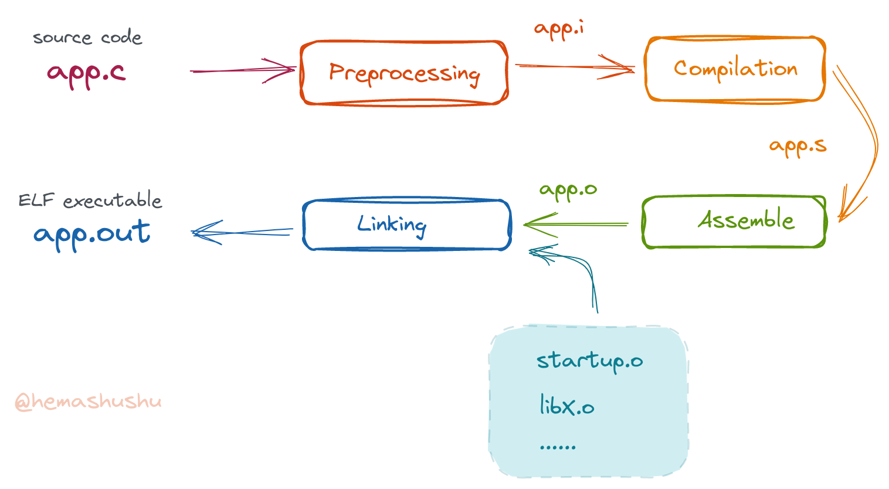

S01C01 什么是交叉编译？GCC 交叉编译及运行第一个程序

这是 《从零开始使用自己的工具一步一步构建现代计算机系统》 系列的第一个系列 ———— 《一步一步深入了解 RISC-V 系统》。
这个系列的目标是实现一个 RISC-V 汇编器和链接器，以及一门有特色的汇编语言和链接脚本语言。有了汇编器和链接器，我们就有能力生成程序（二进制可执行文件）了，这是我们制作自己的工具的基础。
在实现这个目标之前我们有必要先了解一些现有的、被广泛使用的基本工具（主要是编译和调试工具），然后我们还要了解现有的系统的基本原理，比如程序是如何组成的、程序是如何运行的、软件和硬件之间是如何交互的，以及汇编语言是怎样被转换为指令的等，然后才开始设计和编写程序。编程语言主要使用 Rust，它很适合底层程序的开发，能让我们避免很多低级错误，同时像很多现代语言一样拥有很多方便的工具；
很多跟编译器和内核开发相关的文章、教程和项目都选择 C 语言作为编程语言，这是因为在几年之前用 C 语言的确是最合适的。不过现在有了更好的选择，所以这个系列我会用 Rust 来写汇编器和脚本解析器，这并不是为了追赶时髦，而是为了让我们避免一些不必要的挫折。当然在前面讲述基本原理的章节里，还是会用到 C 语言，毕竟它非常直接明了，能够很好地跟汇编对应上。顺带一提，很多人认为 Rust 是 C++ 的替代品，实际上并不是，从应用场景来看，它更偏向 C 语言这一类。
你可能会问：“第一个系列一点儿都不酷啊，我们能否先跳过，直接开始动手写一门语言，或者写一个操作系统，或者写一个 CPU？” 虽然我能理解这种急切的心情，不过答案是否定的。正如 上一篇 讲过的，计算机系统技术的知识面很广而且相互交叉，如果你从一个比较高的起点开始实践，肯定会同时遇到很多新的概念，当你试图弄懂其中的一个概念时，又会引出更多的新概念。这就像你浏览维基百科的情景一样，往往在阅读某个词条的某个段落时，会发现某个你不懂的名词，在浏览器新标签页打开链接之后，结果又遇到新名词。用不了多久你就会在不知不觉中打开了几十个甚至上百个标签页，直到电脑的内存被耗光为止。
一个新手在实现一门语言或者一个操作系统或者处理器时，可能会遇到几十个或上百个新的 知识点，由此形成上万条不同的探索路径，不过所有路径大概率最终都会来到当前这个位置（即本系列要讲述的内容）。所以我们不妨从简单的开始，这样能避免很多不必要的弯路。
在 John R. Levine 的《Linkers & Loaders》第一章里提到：“大概一个房间就能装得下世上所有编写链接器的人” （原文：all the linker writers in the world could probably fit in one room）。看来我们学完这个系列之后可以挤满这个小房间了。
什么是交叉编译？
在一台电脑里编译生成在手机应用程序，这种编译是 交叉编译；在 Linux 系统里编译生成同架构版本的 Windows 应用程序，这种编译也是交叉编译；当然，在 x86_64 架构版本 Linux 系统里编译生成 RISC-V 架构版本 Linux 应用程序这种也是交叉编译。
简单来说，只要是编译生成 运行的环境 跟 当前编译器所运行的环境 不一样的程序的编译过程就叫做 交叉编译。目标运行环境包括 目标架构 和 目标平台 两个元素：
- 目标架构 是指目标机器的 CPU 指令集架构（ISA，有时简称为 指令集），比如常用的 Intel 和 AMD CPU 的指令集是 x86_64，现在流行的手机用的 ARM CPU 指令集是 aarch64。
- 目标平台 是指目标机器运行的操作系统类型，比如 linux, windows 以及 darwin 等。
在开发程序时，可能还得考虑目标环境更细致的一些信息，比如当你在开发 Linux 应用程序时，还得考虑不同发行版之间的细微差别。但对于编译器来说，它只需确定目标架构和目标平台即可。另外还有一些不需要操作系统而能够自己独立运行的程序，这种程序叫做 freestanding 程序 或者 裸机（bare metal）程序，比如在微控制器（MCU）里运行的程序（通常也叫固件）和内核程序，在编译这种程序则只需指定 目标架构 即可。
交叉编译主要有两个用途：
- 一是为了方便生成不同目标环境的程序文件（二进制可执行文件），假如我们开发了一个可以在多个平台上运行的应用程序，通过交叉编译，每次更新时只需在开发机器上跑几次编译过程就可以生成所需的程序文件，如果没有交叉编译，则需要将源代码复制到每一个目标环境然后再编译；
- 其次，也是最重要的原因，有些目标环境根本无法运行编译器，比如在微控制器里，往往只有几十 KB 的 RAM 和几百 KB 的 FLASH（相当于固态硬盘），只能运行一些很小的程序，这种情况下只能借助交叉编译来生成程序。
顺便一提，我们将要实现的编译器的目标架构是 riscv64gc，也是一个交叉编译器。下面先学习一下目前主流的交叉编译器。
GCC 编译器
主流的编译器一般都有交叉编译功能，比如 GCC 和 LLVM。因为在后面讲述软硬件交互原理的章节里需要用到微控制器（MCU），而在微控制器领域里 GCC 更常用一些，所以为了简单起见，下面只讲 GCC 编译器。
在开发程序时，除了编译器还会经常用到二进制工具 Binutils、调试工具 GDB 以及标准库和内核头文件等，这一套被称为 GNU Toolchain。在大部分 Linux 发行版里都可以通过包管理器轻松安装 GNU Toolchain。根据编译目标的不同，工具链的软件包的名字也会不同，比如 RISC-V GNU Toolchain，它们的包名（在 Arch Linux 里）分别是：
- riscv64-linux-gnu-binutils
- riscv64-linux-gnu-gcc
- riscv64-linux-gnu-gdb
- riscv64-linux-gnu-glibc
- riscv64-linux-gnu-linux-api-headers
另外编译目标为 RISC-V 裸机程序的包有：
- riscv64-elf-binutils
- riscv64-elf-gcc
- riscv64-elf-gdb
- riscv64-elf-newlib
在不同的 Linux 发行版里包的名字会有所不同，比如在 Ubuntu 里包名分别是 binutils-riscv64-linux-gnu，gcc-riscv64-linux-gnu，binutils-riscv64-unknown-elf，gcc-riscv64-unknown-elf，gdb-multiarch。如果你系统的包仓库里没有 RISC-V GNU Toolchain，则可以 下载源代码 然后通过源代码的方式安装。
如果没有另外的说明，整个系列文章的操作都是在 Linux 系统环境里完成的，当然你也可以在自己平常使用的系统上操作，不过如果你决心要深入学习系统技术的话，建议还是使用 Linux 系统环境，除了比较方便之外，更重要的是 Linux 系统（特别是内核）就像一个开放的图书馆，里面充满了宝藏，放着宝藏不要那实在太浪费了。
交叉编译第一个程序
“Hello World!” 程序就像编程世界里的史莱姆一般的存在，作为交叉编译的第一个实践对象当然不会放过它。
在任意位置新建一个名为 hello-world 的目录，然后创建名为 app.c 的文件，内容如下：
#include <stdio.h>
int main() {
printf("Hello World!\n");
return 0;
}
程序的功能非常简单：向屏幕打印一行文字 “Hello World!"，然后结束程序，程序的返回值为 0。所谓 返回值 即 exit code，是一个 uint32 数字，需注意的是在 POSIX 环境里 返回值 只有其二进制的最小 8 位是有效的，因此有效值的范围是从 0 到 255。可以通过命令 $ echo $? 显示上一个结束的程序的返回值。
每篇文章里面的源代码我都会存放一份在文章目录里面一个名为
resources的文件夹里，有需要的可以到 文章的 Github 源代码仓库 下载。
交叉编译
普通编译（即 本地编译）的编译、汇编、链接的命令分别是 gcc，as 和 ld，而在交叉编译时对应的命令的名称会多一个前缀。在当前的例子里，前缀是 riscv64-linux-gnu-，所以交叉编译的命令如下：
$ riscv64-linux-gnu-gcc -g -Wall -o app.out app.c
- 参数
-g用于生成供 GDB 使用的调试信息，调试信息包括源代码当中的局部变量名称，指令对应的源代码的行数等。虽然暂时用不上调试信息，不过在平时编译时都加上可以培养良好的习惯； - 参数
-Wall用于报告编译过程中的所有警告和错误信息，比如声明了局部变量却没使用，或者某个变量只赋值却从未被读取等，这些警告信息有助于书写良好的代码； - 参数
-o app.out用于指定输出的文件的名称，如果缺省这个参数，默认的输出文件名为a.out。
编译完成后得到文件 app.out。
二进制可执行文件
使用 file 命令可以查看输出文件 app.out 的格式信息，例如：
$ file app.out
输出结果如下：
app.out: ELF 64-bit LSB pie executable, UCB RISC-V, RVC, double-float ABI, version 1 (SYSV), dynamically linked, interpreter /lib/ld-linux-riscv64-lp64d.so.1, BuildID[sha1]=afe0994d7df77dc817058ae17e814d8f0a4163ed, for GNU/Linux 4.15.0, with debug_info, not stripped
上面的一段文本包含的信息有：
-
ELF和executable，表明当前文件是一个 ELF 文件格式 当中的 可执行文件。ELF 格式有 3 种类型：executable是 可执行文件，这是最常见的一种类型。Linux 系统里的可执行文件除了脚本就是这种二进制的可执行文件；shared object是 共享对象文件，也就是共享库，用于在运行时动态地链接到程序。目录/usr/lib里面那一堆 “*.so” 文件就是这种类型。relocatable是 可重定位文件，即编译任务中途产生的文件。上面的编译命令在背后大致做了两件事：将 C 源代码转换为一系列机器指令并保存在 可重定位文件 里，这个过程称为 编译；另一件事是把一个或多个 可重定位文件 连接成为一个可执行文件或者共享库，这个过程称为 链接。
-
dynamically linked,interpreter ...，表明当前可执行文件是 动态链接 类型，也就是说它在运行时，要需要其它共享库的帮忙才能完成工作。而这些库的加载和初始化任务则由interpreter指定的程序来完成，这个程序也叫 运行时动态链接器，这个程序通常是/usr/bin/ld.so（虽然扩展名是so，不过它是可执行的）。可执行文件还可以是 静态链接（statically linked） 类型，表示它在运行时不需要其它共享库帮忙，它自己就能完成所有工作。 -
pie，表明当前的可执行文件是位置无关的可执行文件（Position Independent Executables），这部分内容将会在后面的章节里讲解。 -
64-bit,RISC-V,double-float ABI，GNU/Linux 4.15.0，这些信息表明当前可执行文件的目标架构、目标平台以及目标平台的一些细致信息，这些内容也会在后面的章节里讲解。 -
LSB，表明当前文件里的数据是 “低端字节优先”（“least-significant byte first”）的，也就是平常说的 “低端序”（“little-endian”）。跟LSB相反的是MSB，即 “高端字节优先”（“most-significant byte”），也就是平常说的 “高端序”（“big-endian”）。字节顺序决定了一个整数在内存或者磁盘中如何储存，比如数字0x11223344，在内存中如果使用LSB则被储存为 “(这端是低位地址) 44 33 22 11 （这端是高位地址）"，如果使用MSB，则会被储存为 “(这端是低位地址) 11 22 33 44（这端是高位地址）"。用十六进制查看器查看LSB类型的可执行文件的内容时，如果看的内容是数字，那么需要在脑海里把数字反过来再组合才是它的真实值，而如果看的内容是字符串，则可以按顺序地阅读。简单来说，看数字需要反转一次，而文本内容（仅限 ASCII 文本）则可以直接阅读，而MSB则刚好相反。不过这都是人类才有的烦恼，对于计算机来说都是一样的。 -
with debug_info,not stripped，表明当前可执行文件里包含调试信息。
file 命令只能非常粗略地查看文件的格式和基本信息，如果想查看可执行文件的详细内容，需要 GNU Toolchain 里面一组叫做 GNU Binutils 的工具，后面的章节会详细讲解。
运行
如果你尝试运行上面编译得到的 app.out 会发现没法正确运行，这是因为该可执行文件是设计在 RISC-V 架构版本的 Linux 系统环境里运行的，可惜目前 RISC-V 架构的计算机还非常少，而且价格也贵，所以比较实际的方案是使用虚拟机来运行。
一般大家熟知的虚拟机软件，比如 VirtualBox、VMWare 等只能虚拟一台架构跟主机（host machine）一样的机器，如果需要模拟其它架构类型的机器，推荐使用 QEMU 模拟器。
安装 QEMU
QEMU 也是一款开源免费的软件，在大部分 Linux 发行版里的包仓库里都包含有 QEMU，所以只需使用系统的包管理器就可以安装 QEMU，通常需要安装下面这些包（针对 Arch Linux 发行版）：
qemu-system-riscvqemu-userqemu-user-static
在不同的发行版里，包的名字会有些许不同，比如在 Ubuntu 里，包名分别为 qemu-system，qemu-user 和 qemu-user-static）。对于包仓库里没有 QEMU 的发行版，可以下载 QEMU 的源代码，然后根据这篇指引编译安装。
QEMU 可以模拟一整套完整的硬件，包括 CPU、内存、磁盘、网络接口、USB 接口等组件，除此之外，QEMU 还可以模拟一个 Linux 系统。也就是说，QEMU 有两种工作模式，前者称为 全系统模式，在这种模式下可以执行所有 CPU 指令，可以运行裸机程序。后者称为 用户模式，可以直接运行编译目标架构不同的 Linux 应用程序。
全系统模式使用程序 qemu-system-riscv64 来启动，可以通过参数指定机器类型、CPU 核心的数量、内存的容量、虚拟磁盘等。用户模式使用程序 qemu-riscv64 来启动，把我们写的应用程序（可执行文件）的文件路径作为参数传给 qemu-riscv64 即可，在这种模式下，QEMU 会把应用程序当中的指令转换为主机架构的指令，同时会转换程序当中的系统调用。
QEMU 出自一位颇具传奇色彩的程序员 Fabrice Bellard 之手，他写的 FFmpeg 几乎存在每一台计算机里（尽管可能很多人都不知道，但却是真的），大部分媒体播放器软件及视频编辑软件都依赖它，另外还写了 TCC、QuickJS 等程序。
尝试运行程序
如果使用全系统模式运行我们的程序，还需要给虚拟机配置系统引导器、一个包含有 RISC-V 架构版本的 Linux 系统的虚拟磁盘，另外还需要把应用程序传送进去等。所以为了快速把上面写的 “Hello World!” 程序跑起来，下面使用用户模式来运行：
$ qemu-riscv64 app.out
运行的结果是：
qemu-riscv64: Could not open '/lib/ld-linux-riscv64-lp64d.so.1': No such file or directory
显然程序并没有正确地运行。GCC 默认产生动态链接类型的程序，这种程序在运行时需要一个 运行时动态链接器 加载程序所需的共享库，以及进行一系列的初始化工作（动态链接器即 ld.so，在当前的例子里，它是错误信息里显示的那个 /lib/ld-linux-riscv64-lp64d.so.1）。然而 GCC 默认产生的程序是假定在 “普通 Linux 环境” 里运行，而不是 QEMU 用户模式 这种特殊的环境。当前主机系统存在动态链接器 /lib/ld-linux-x86-64.so.2，但不存在 /lib/ld-linux-riscv64-lp64d.so.1，所以就出错了。
指定 QEMU 用户模式 的程序动态链接器
如果你的系统是 Arch Linux，会发现文件 ld-linux-riscv64-lp64d.so.1 的真正路径是 /usr/riscv64-linux-gnu/lib/ld-linux-riscv64-lp64d.so.1，按照 qemu-riscv64 的说明，通过参数 -L 或者环境变量 QEMU_LD_PREFIX 传入一个路径，QEMU 就会把这个路径作为前缀添加到 ELF 的 interpreter 指定的程序的前面。例如：
$ qemu-riscv64 -L /usr/riscv64-linux-gnu/ app.out$ QEMU_LD_PREFIX=/usr/riscv64-linux-gnu/ qemu-riscv64 app.out
如无意外，上面两个命令都能正确运行，能看到程序输出的 “Hello World!” 文本。
编译为静态链接类型的程序
除了通过指定 QEMU 用户模式 的程序动态链接器来正确运行程序之外，还有另外一个方法，就是让 GCC 生成静态链接类型的可执行文件。
所谓静态链接程序，就是把外部函数的二进制代码（即指令序列）在编译时复制到目标可执行文件里，这样程序在运行时就不再需要动态链接其它共享库了，当然也就不再需要动态链接器 ld.so 了。在 GCC 编译命令里添加 -static 参数可指示 GCC 生成静态链接的程序，修改后的编译命令如下：
$ riscv64-linux-gnu-gcc -static -o app-static.out app.c
先看看文件格式：
$ file app-static.out
输出的部分结果如下：
app-static.out: ... statically linked ...
可见原先的 “dynamically linked” 已经变为 “statically linked”。
然后用 qemu-riscv64 运行这个静态链接的可执行文件：
$ qemu-riscv64 app-static.out
同样可以得到了预期的结果：程序输出一行 “Hello World!” 文本。
然后看看同一个程序的动态链接类型和静态链接类型的文件大小：
$ ls -lh
total 668K
-rw-r--r-- 1 yang yang 78 Nov 26 04:00 app.c
-rwxr-xr-x 1 yang yang 9.8K Nov 27 13:38 app.out
-rwxr-xr-x 1 yang yang 645K Nov 27 21:40 app-static.out
结果显示动态类型的程序大小是 9.8K，而静态类型的程序是 645K，后者比前者大了许多，那是因为编译器把 printf 函数所需要的函数的代码（即二进制指令）都复制到目标可执行文件里头了。
动态链接 对系统来说是个不错的机制，因为可以减小程序的容量、节约存储空间、提高传输速度，再加上内存映射技术，同一个共享库在内存里可以重用，因此在运行时也节约了物理内存空间。但动态链接带来的问题也相当令人头痛。在日常使用 Linux 经验里，很少有程序能下载即能运行，大部分情况都会出现共享库找不到或者版本不匹配等错误。如果要安装一个在包仓库里不存在的程序，则只能通过编译源代码的方式来安装了，这种方式对于普通用户（非专业用户）来说无疑难如登天。虽然可以通过诸如 AUR 和 PPA 等个人库来缓解问题，却不总是有效的。
河马蜀黍认为上面的问题是因为过度使用共享库引起的，把每一个库都放进系统全局库里并不是一个好主意。因此在我们要实现的操作系统里，将完全禁止用户向系统添加全局的共享库，全局共享库仅限非常通用且有必要的库，而且跟内核和驱动一样，全局共享库应该由内核仓库维护。而且应用程序也应该相互隔离，即一个程序自带的共享库只能由程序自己或者子程序使用，而不能提供给其它程序使用。以此机制从根本上解决共享库带来的问题，减少应用程序的发行和安装的负担。
指定程序的动态链接器
除了上面的两种方法，还能通过修改程序的动态链接器来让程序运行起来。具体来说就是在编译时传入链接参数 --dynamic-linker 以更改程序的 interpreter 值，命令如下：
$ riscv64-linux-gnu-gcc -g -Wall -Wl,--dynamic-linker,/usr/riscv64-linux-gnu/lib/ld-linux-riscv64-lp64d.so.1 -o app-mod.out app.c -L /usr/riscv64-linux-gnu/lib -lc
命令当中的参数 -Wl,--dynamic-linker,... 的作用是向链接器传递参数；参数 -L ... 用于指定链接器搜索共享库的路径；参数 -lc 用于指定链接共享库 libc.so。这些参数在后面的章节还会详细讲解。
编译完毕之后，可以使用 file 命令检查程序：
$ file app-mod.out
输出的部分结果如下：
app-mod.out: ... interpreter /usr/riscv64-linux-gnu/lib/ld-linux-riscv64-lp64d.so.1 ...
可见程序的 interpreter 已经更改为指定的路径了。然而运行这程序时又有新的错误提示：
$ qemu-riscv64 app-mod.out
app-mod.out: error while loading shared libraries: libc.so.6: cannot open shared object file: No such file or directory
看来 RISC-V 版的 ld.so 已经起作用了，但这个动态链接器找不到 RISC-V 版的共享库 libc.so.6。这个问题比较好解决，只要通过环境变量 LD_LIBRARY_PATH 就可以指定程序所依赖的共享库的路径，例如：
$ LD_LIBRARY_PATH=/usr/riscv64-linux-gnu/lib qemu-riscv64 app-mod.out
程序同样能正确运行。不过这种方法并没有太大用处，因为比前面两种方法复杂太多，而且生成的程序只适合在当前机器上 QEMU 用户模式 里运行，没法在标准的 RISC-V Linux 环境里运行。所以这里主要是为了演示如何修改程序的 interpreter。
分阶段编译
当执行命令 riscv64-linux-gnu-gcc 将一个 C 源代码编译为一个可执行文件时，实际上 GCC 是分 4 个阶段（或者说步骤）来完成的：

-
预处理
将源代码里
#include ...指定的文件复制进来，解析其中的条件编译指令（#ifdef），展开宏（macro）等。相当于命令：$ riscv64-linux-gnu-cpp app.c > app.i或者
$ riscv64-linux-gnu-gcc -E app.c > app.i经过预处理的 C 语言源代码文件的扩展名为
*.i。注意程序
riscv64-linux-gnu-cpp当中的 “cpp” 是指 “C Preprocessor”，而不是 “C++” 的意思。 -
编译
将 C 源代码编译为汇编源代码，相当于命令：
$ riscv64-linux-gnu-gcc -S app.i第 1 到第 2 步也可以一步完成：
$ riscv64-linux-gnu-gcc -S app.c生成的汇编源代码文件的扩展名为
*.s。注意我们手写汇编源代码的文件扩展名一般是
*.S（大写S），*.S文件在汇编时会进行预处理（比如处理.include指令），而扩展名为*.s（小写s）则不会进行预处理。具体的扩展名和 GCC 参数可以参考GCC Options Controlling the Kind of Output。 -
汇编
将汇编源代码转换为机器指令序列，生成 可重定位文件，相当于命令：
$ riscv64-linux-gnu-as -o app.o app.s第 1 到第 3 步也可以一步完成：
$ riscv64-linux-gnu-gcc -c -o app.o app.c参数
-c表示只编译但不链接。 -
链接
将一个或多个 可重定位文件 连接起来，并重新定位其中的全局变量、静态变量和函数的地址，最后生成 ELF 格式的可执行文件，相当于命令：
$ riscv64-linux-gnu-ld -o app.out startup.o app.o上面的命令会将
startup.o和app.o两个文件链接起来生成可执行文件app.out。注意上面的
startup.o是一个假象的应用程序启动器（提供应用的入口_start过程以及做一些初始化和清理工作），在当前示例的源代码目录里并不存在。
上面就是命令 $ riscv64-linux-gnu-gcc -o app.out app.c 在背后进行的一系列操作，如果想知道 GCC 在编译过程中的每个步骤以及细节，可以传入 -v 参数，比如 $ riscv64-linux-gnu-gcc -v -o app.out app.c。
在平常的编译程序任务中，我们并不需要分成 4 步，顶多也只会分成 编译 和 链接 2 步，而且一般都是借助诸如
make等构建工具来完成。但我们仍然需要清楚知道编译过程背后有哪些阶段及其作用，理解这些概念有助于解决在编译过程遇到的各种问题。
常用的编译参数
GCC 还有一些其它常用的参数：
-
-I用于指定编译时的头文件的路径有时头文件（
*.h）分布在多个目录，这时可以用参数-I把额外的头文件的路径包含进来，比如当前的路径为/home/yang/hello-world/app.c，假如有额外的头文件位于/home/yang/hello-world/include/，则可以这样传入参数：$ riscv64-linux-gnu-gcc -I /home/yang/hello-world/include app.c -
-L和-l分别用于指定链接时额外库的路径和名称接着上一个例子，如果应用程序需要使用到共享库
/usr/lib/hello-world/libmymath.so，则可以这样传入参数：$ riscv64-linux-gnu-gcc app.c -L /usr/lib/hello-world/ -lmymath参数
-lmymath的写法有点奇怪，其实它是-l mymath的简写，即-l是参数名称，mymath是参数值。这个参数表示链接过程会使用到共享库libmymath.so。注意参数
-l的值是库的 “soname”，比如上面例子中共享库文件的真实名称是libmymath.so，去除了前缀lib和后缀.so之后就是 “soname” 了。如此类推，-lm表示共享库libm.so，-lpthread表示共享库libpthread.so。
note 一般习惯把参数
-L ... -l ...放在命令的末尾，也就是遵循 “被依赖的放在后面” 的顺序。
如果将编译任务分为 编译 和 链接 两步，则在编译阶段只需指定 -I 参数，而链接阶段只需指定 -L 和 -l 参数，因为头文件仅供预处理使用的，对链接无意义，而库文件则仅供链接使用，对编译无意义。
总结
这章主要讲解什么是交叉编译，交叉编译的作用，以及尝试交叉编译一个 “Hello World!” 程序，然后使用 QEMU 模拟一个不同架构的 Linux 环境来运行交叉编译得到的可执行文件。
这章是我们漫长的几个系列文章当中的第一个系列的第一章，如果你觉得这章的内容太难了，可能只是因为对 C 语言和 Linux 环境不是很熟悉，你可以适当停下来，然后随便找一些相关的文章或者教程看看。请记住计算机的每门科目都不需要一下子从头到尾看完，每次看一两章就可以停下来，然后去做点别的事情，让你的大脑在背后慢慢地消化，回来再看一下这系列文章，说不定一下子就全都看得懂了。
好了，如果觉得没问题那就点击下一章吧。下一章将会构建一个简单的无需操作系统就可以独自运行的程序。